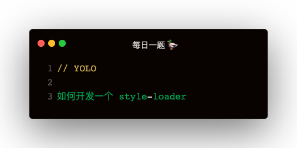
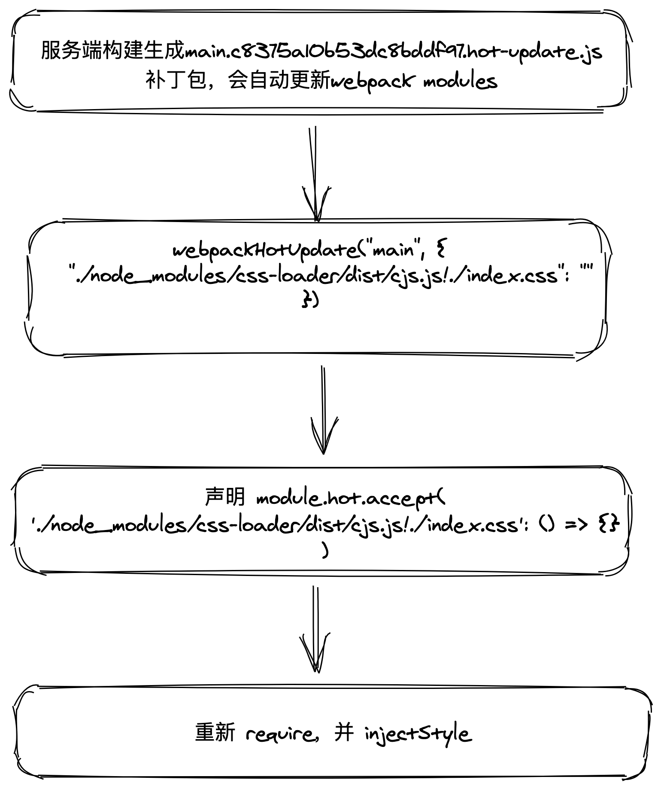

style-loader 的作用
- 把 css 插入 html
- 开发阶段模块热更新
style-loader 和 css-loader 的关系
style-loader 和 css-loader 经常一起使用，那么不使用 css-loader，只用 style-loader 加载 css 行不行呢？答案是不行的 🙅♂️
- style-loader 只是把 css 插入 html，但是并不会解析 css 文件
- 那么 webpack 是不认识 css 文件的，需要 css-loader 来加载 css文件
- css-loader 换成 less-loader 也是成立的，其作用就是加载 css 文件
试想一下 实现 style-loader需要解决什么问题
- 如何拿到 css-loader 解析之后的源码？
- 如何避免 css-loader 的重复执行【死循环】？
- 如何支持热更新？
可以实行的一种方案：
- 每次热更新，比如更新了 index.css，网页端会收到一个补丁包：./node_modules/css-loader/dist/cjs.js!./index.css，网页端收到补丁包，会去更新这个模块
- 客户端监听 module.hot.accept('./node_modules/css-loader/dist/cjs.js!./index.css', function () {})
- 回调函数中，重新获取这个模块然后进行更新
- 更新过程中，如何找到最初的那个 style 节点，客户端就需要用一个映射来保存 styleInDom，映射的值为更新函数，键是啥？
- 加载 index.css 插入到 html，那么 index.css 这个名称就可以作为 key
从 style-loader 的使用分析原理
style-loader 的应用场景：
loader: ['style-loader', 'css-loader']
webpack loader 的执行路径：
| - style-loader `pitch`
| - css-loader `pitch`
| - requested module is picked up as a dependency
| - css-loader normal execution
| - style-loader normal execution
css-loader 返回结果分析
css-loader 加载 css 之后，loader 的 source 如下：
// Imports
var ___CSS_LOADER_API_IMPORT___ = require("../node_modules/css-loader/dist/runtime/api.js");
var ___CSS_LOADER_EXPORT___ = ___CSS_LOADER_API_IMPORT___(function(i){return i[1]});
// Module
___CSS_LOADER_EXPORT___.push([module.id, "nbody {n background: yellow;n}n", ""]);
// Exports
module.exports = ___CSS_LOADER_EXPORT___;
从这个结果来看，在 style-loader 中需要对 source 进行 require 模块导入，然后才能拿到其中的 css
- 在 loader 中 require 导入其他模块不规范
- 过程很复杂
所以采用 pitch 的方式
pitch
pitch 可以拦截 loader，pitch 中 return 会导致后续的 loader 不执行
pitch 的写法
module.exports.pitch = function (remainingRequest, precedingRequest, data) {
remainingRequest： 剩下的请求
precedingRequest：已处理的请求
data：数据
}
style-loader 首先需要拿到 css-loader 的处理结果：
module.exports = function (remainingRequest) {
const remainingPath = loaderUtils.stringifyRequest(this, `!!${remainingRequest}`)
return `
import content from ${remainingPath}
`
}
这样就拿到 css-loader 处理之后的数据了。如下：
[
0: [
0: "./node_modules/css-loader/dist/cjs.js!./index.css"
1: "body { color: red}",
2: ""
],
i: (modules, mediaQuery, dedupe) => {},
length: 1
]
从这个数据中，可以看出：0 可以作为 id，1 可以作为css
模块热更新的写法
webpack.config.js 中配置 devServer
devServer: {
hot: true
}
每个需要支持热更新的模块声明 module.hot.accept
if (module.hot) {
module.hot.accept('./index.css', function () {
console.log('halo! css changed')
})
}
可以看出我们的代码中是没有声明 module.hot.accept 的，可是 css 却支持热更新，说明 loader 中注入了accept
accept 注入
accept 中重新获取css
if (module.hot) {
module.hot.accept(remainingPath, function () {
try {
const newContent = require(remainingPath);
// 拿到新的内容，重新走渲染
injectStyle(newContent);
} catch (e) {
console.log('热更新发生错误：', e)
}
})
}
这里用try catch包起来，因为如果这个回调里报错，webpack会走 reload 导致页面刷新
利用闭包
哪些变量用到了闭包呢：styleInDom，updater，style
function injectStyle (content) {
for (let item of content) {
const id = item[0];
const updater = styleInDom[id];
const css = item[1];
// 如果已经渲染过，拿到 updater 方法，该方法中利用闭包缓存了 style 节点，替换 style 中内容即可
if (updater) {
updater(css);
} else {
styleInDom[id] = addStyle(css)
}
}
}
function addStyle (css) {
const style = ducument.createElement('style');
style.appendChild(document.createTextNode(css));
document.head.appendChild(style);
return function updater (css) {
if (css) {
while (style.firstChild) {
style.removeChild(style.firstChild);
}
style.appendChild(document.createTextNode(css));
} else {
style.parentNode.removeChild(style);
delete styleInDom[id]
}
}
}
这里不管第一次渲染，还是之后的热更新，每次 injectStyle 就行了，传入 css-loader 转换之后的结果
总结
